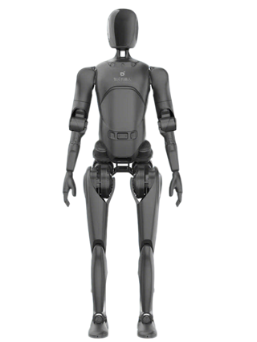

Humanoid · China · Leader · #12 R-Score rank
AgiBot A2 Robot Profile
Embodied AI datasets, manufacturing, general robot development
Robot Snapshot
Core commercial and technical signals for AgiBot A2.
Commercial Access
Purchase path, regional access, and import readiness.
Türkiye Market Access
Local sales path, distributor status, import readiness, and partner pipeline.
AgiBot A2 facts
- Company
- AgiBot →
- Status
- Commercializing
- Use case
- Embodied AI datasets, manufacturing, general robot development
- Height
- Full-size
- Runtime
- Not disclosed
- Official source
- Open official source →
Robologai view
AgiBot A2 is tracked as a Humanoid robot for Embodied AI datasets, manufacturing, general robot development. Robologai scores it by maturity, deployment signal, price clarity, media proof, and official source strength.
82/100 Leader
Maturity 4/5
Price clarity 1/5
Commercial 75
Mobility 93
AI signal 93
Leader
Readiness Breakdown
How Robologai scores AgiBot A2 across market-readiness signals.
Data Quality
Source confidence, pricing clarity, and deployment proof.
Source Notes
AgiBot A2 source trail.
Deployment Context
What AgiBot A2 signals about the physical AI market.
Compare Next